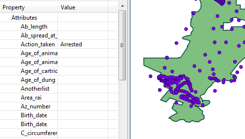

As consultas de observação de entidade são usadas para exibir detalhes de observações para qualquer fonte de dados (patrulhas, incidentes independentes, outros plug-ins, etc.). Além dos filtros do modelo de dados, as consultas de observação da entidade permitem que os usuários filtrem incidentes com base nas propriedades da entidade.
Tais consultas exibem os registros de observação que atendem aos requisitos dos filtros. Não é feito nenhum resumo (ou seja, sem totais, quantidades, agregações, etc.). A tabela resultante inclui todos os atributos de patrulha, bem como todas as informações de categoria e atributo do modelo de dados associadas à observação. Os resultados podem ser visualizados em uma tabela ou em um mapa.
 |
Exemplo de consulta de observação com atributos de modelo de dados |
Incidente x Observação
Uma observação é um único item observado e consiste em exatamente uma categoria do modelo de dados e todos os seus atributos associados. Um incidente é um conjunto de observações que ocorrem no mesmo ponto e na mesma hora (um ponto de referência).
Filtros de Incidente x Observação
As consultas de observação suportam filtros de incidentes e filtros de observação. Os filtros de observação consideram apenas as observações individuais ao filtrar dados. Como resultado, você não pode consultar categorias. Os filtros de incidentes analisam todas as observações em um determinado incidente ao filtrar dados. Isso permite que você consulte categorias.
Os filtros de observação retornarão apenas as observações que correspondem ao filtro. Os filtros de incidentes retornarão todas as observações em qualquer incidente que corresponda ao filtro.